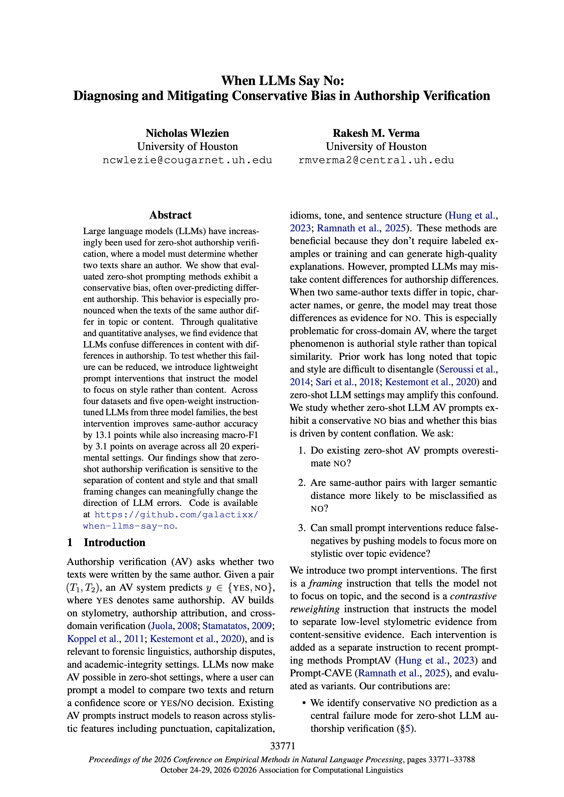

EMNLP 2026
When LLMs Say No: Diagnosing and Mitigating Conservative Bias in Authorship Verification
Proceedings of EMNLP 2026, pp. 33771–33788
AI & NLP Research
I study large language models and natural language processing, with a focus on trustworthy AI, model behavior, and reliable evaluation.
My research interests lie at the intersection of natural language processing and large language models. I am particularly interested in how model predictions are affected by prompts and how to evaluate these systems more reliably.
In my recent work at EMNLP 2026, we examine and diagnose a conservative bias in zero-shot authorship verification and investigate lightweight prompt mitigation methods.
I am interested in developing more reliable ways to understand, evaluate, and improve language model behavior.
Bachelor's degree, Computer Science
Bachelor's degree, Economics · Minor, Mathematics

EMNLP 2026
Proceedings of EMNLP 2026, pp. 33771–33788